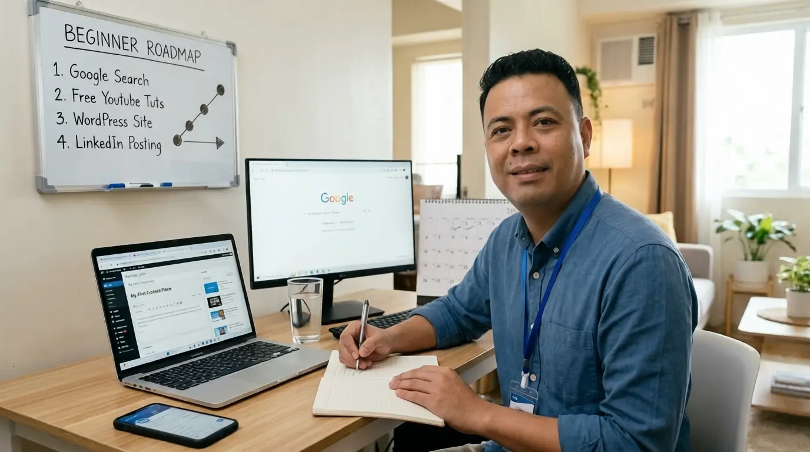

You Don’t Need an Expensive Course to Start Your Digital Career
Published on June 30, 2026
Many people think the barrier to entry for digital work is a high-priced certification. The truth is that everything you need to learn is already available for free.
If you are an OFW looking to transition, a freelancer leveling up, or a beginner feeling overwhelmed by where to start, here is a simple roadmap to get you moving:

The Four-Step Beginner Roadmap
- Master the Basics: Start by learning how to use Google Search effectively. It is the most powerful tool for self-teaching.
- Use Free Education: YouTube is a goldmine. Search for tutorials on WordPress, basic SEO, and professional networking.
- Build Your Sandbox: Do not just watch videos. Create a WordPress site, experiment with content, and practice writing to build your voice.
- Document, Don’t Just Study: Your portfolio does not have to be a masterpiece on day one. It is a record of what you are learning.
The digital world changes fast, but the ability to teach yourself is the only skill that stays relevant. Stop waiting for the perfect time or the perfect course. Start with what you have today.
Which digital skill are you learning right now? Drop a comment on my LinkedIn post and let us help each other grow.